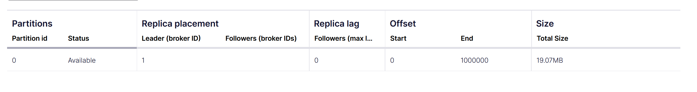
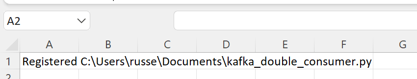
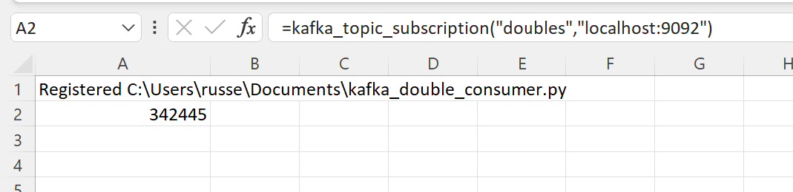

Streaming from Kafka
xlSlim can very efficiently stream data from Kafka into Excel.
Preparing the data
This example assumes you have a Kafka broker available. One alternative is to run Kafka locally using Docker, Confluent package Kafka into Docker containers with good documentation.
The example uses the Python package aiokafka which can be installed using pip.
Once a Kafka broker is available we need to publish a sequence of one million doubles to a Kafka topic “doubles”. We will use this Python code to publish the data.
# A running Kafka broker can be setup simply using Docker, the Confluent platform includes a nice management console, see:
# https://docs.confluent.io/platform/current/quickstart/ce-docker-quickstart.html
# The aiokafka package can be installed using pip, see https://github.com/aio-libs/aiokafka
import pickle
import asyncio
from aiokafka import AIOKafkaProducer
async def send():
producer = AIOKafkaProducer(
bootstrap_servers="localhost:9092", value_serializer=lambda m: pickle.dumps(m),
)
# Get cluster layout and initial topic/partition leadership information
await producer.start()
try:
# Produce messages
for i in range(1_000_000):
await producer.send("doubles", float(i))
finally:
# Wait for all pending messages to be delivered or expire.
await producer.stop()
if __name__ == "__main__":
asyncio.run(send())
Note
All the Python code and Excel files shown are available from github in the xlslim-code-samples repo.
Save the Python code as a new file on your PC. I saved the file in my Documents folder.
Run the code directly in Python.:
python kafka_double_producer.py
{kind=link}
In the Kafka dashboard I can see one million messages are available (Confluent has a nice dashboard, your Kafka broker may not).
{kind=link}
Streaming the data
Now that the data is available we can stream the sequence of doubles into Excel. As you will see, xlSlim makes this very easy.
This Python code defines an asynchronous generator function that yields every message received from a Kafka topic:
# Shows how a subscription to a Kafka topic can be setup
# A running Kafka broker can be setup simply using Docker, the Confluent platform includes a nice management console, see:
# https://docs.confluent.io/platform/current/quickstart/ce-docker-quickstart.html
# The aiokafka package can be installed using pip, see https://github.com/aio-libs/aiokafka
import asyncio
import pickle
from aiokafka import AIOKafkaConsumer
async def kafka_topic_subscription(topic: str, server: str) -> float:
"""Subscribe to data from a Kafka topic."""
consumer = AIOKafkaConsumer(
topic,
bootstrap_servers=server,
# Using pickle for this demo, more realistic options would be JSON, MessagePack, etc
value_deserializer=lambda m: pickle.loads(m),
# For this demo we always replay all messages
auto_offset_reset="earliest",
)
await consumer.start()
try:
# Consume messages
async for msg in consumer:
yield msg.value
finally:
# Will leave consumer group; perform autocommit if enabled.
await consumer.stop()
Save the Python code as a new file on your PC. I saved the file in my Documents folder.
Open Excel and enter this RegisterPyModule() formula (amending the location to match where you saved the file and the environment where you installed aiokafka):
=RegisterPyModule("C:\Users\russe\Documents\kafka_double_consumer.py","C:\Users\russe\anaconda3\envs\py37")
You should see a message similar to this confirming the module registration:
{kind=link}
The kafka_topic_subscription() generator function is now available in Excel.
Let’s call the function with the Kafka broker address and topic:
=kafka_topic_subscription("doubles","localhost:9092")
You will see Excel very rapidly receiving the one million doubles.
{kind=link}
Note
Set Excel’s Calculation Options to Automatic to see the value ticking. The functionality works perfectly in Manual calculation mode too, the value shown updates every time you press F9. Note that the generator function runs in an independent background thread so runs regardless of Excel’s calculation mode.
The Kafka subscription continues to run once all the messages have been received. If you rerun
python kafka_double_producer.py
you will see that new values are streamed to Excel as soon as they are published to Kafka.